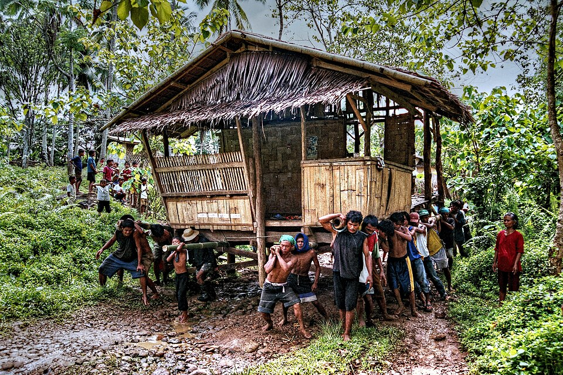
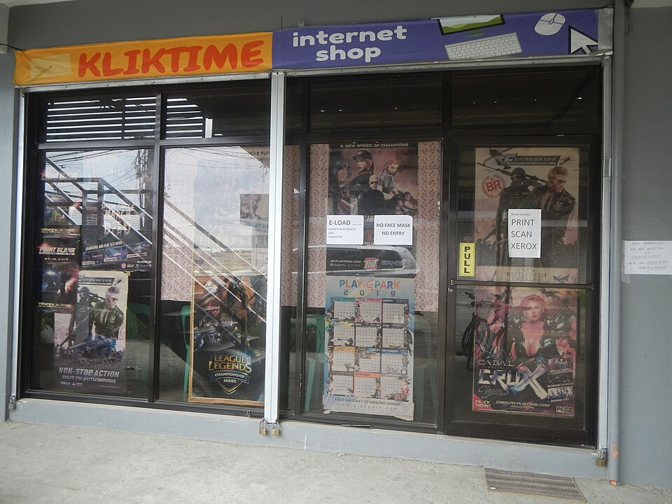
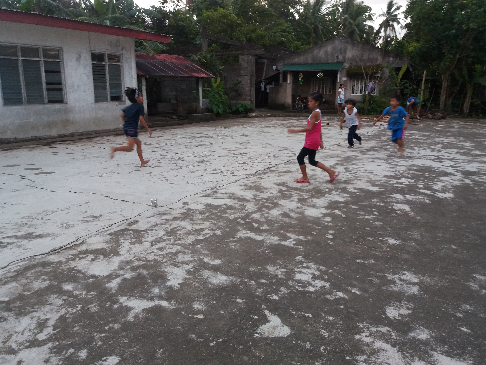
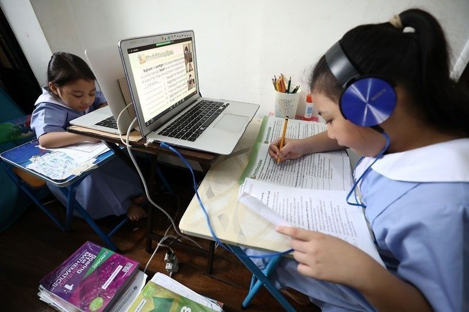

Filipino in Modern Times
Filipino Culture in the digital age
How Filipinos create, share, and keep their culture alive online.
Introduction
What is Filipino culture + why does the digital age matter?
Filipino culture is an intricate tapestry woven from centuries of indigenous traditions, historical influences, and deeply ingrained social values. At its heart lie core principles such as pakikisama (closeness and interpersonal harmony), bayanihan (communal unity and cooperation), and strong familial devotion. These values dictate how Filipinos treat one another, celebrate life, and navigate societal change.
As technology rapidly transforms global communications, the Philippines has quickly risen as one of the world's most hyper-connected nations. The digital age matters immensely because it shifts where and how cultural life occurs. Rather than replacing physical heritage, the digital space acts as an expansive virtual arena where Filipino identity is actively expressed, debated, adapted, and preserved. Understanding this intersection is key to ensuring that rich cultural traditions remain vibrant and relevant for future generations living in a hyper-connected world.

The Evolution of Filipino Culture
Click each era to learn how technology shaped Filipino culture.
Culture
TV
Era
YouTube
Gen Z
Filipino
Culture Map of the Philippines
Click a region to explore its cultural highlights.
Luzon
Home to Manila, the cultural and economic heart of the Philippines. Luzon is where modern digital culture meets deep historical roots.
- Manila — social media capital
- Banaue Rice Terraces (Ifugao)
- Pahiyas Festival (Quezon)
- Barong Tagalog formal wear
Section 1: Filipino Culture Online
1. Social Media & Cultural Expression

Social media networks have evolved into primary cultural commons for modern Filipinos. Platforms like Facebook, Instagram, and TikTok serve as dynamic outlets where everyday life meets cultural storytelling. Millennials and Gen Z leverage these spaces to showcase traditional crafts, share home-cooked Filipino recipes, and participate in viral trends that reflect distinctively Filipino humor and social commentary.
Netnographic research highlights how foundational values translate directly into digital interactions. Principles of collective respect, community support, and shared experiences guide how content is created and consumed online. However, this digital shift also challenges traditional views on personal privacy and boundaries, forcing users to balance communal openness with modern concerns over personal data.
2. Filipino Language Online
The digital realm has accelerated the transformation of language within the Philippines. Online communication heavily features "Taglish"—a seamless blend of Tagalog and English that mirrors the everyday fluid speech of urban Filipinos. This linguistic evolution helps express complex modern thoughts while maintaining deep cultural resonance.
Taglish blends Filipino/Tagalog and English in everyday digital communication — it's one of the most widely spoken mixed languages in the world.
Furthermore, platforms like TikTok have given rise to vibrant internet slang among younger demographics. Words are constantly re-invented, shortened, or given new cultural meanings, serving as a form of social currency and identity marker for Gen Z. These dynamic linguistic shifts show that the national language is not a static artifact, but a living medium that continuously adapts to technological spaces.
3. Filipino Communities
For a nation with millions of citizens living and working abroad as Overseas Filipino Workers (OFWs), digital spaces serve as an essential lifeline. Online communities bridge vast physical distances, allowing diaspora populations to remain intimately connected to their homeland's social and cultural rhythms.
Virtual groups, community chat hubs, and forum spaces mirror the traditional barangay spirit. Through these platforms, Filipinos organize mutual aid drives, celebrate town fiestas virtually, offer support to fellow countrymen during times of hardship, and pass down cultural stories to children growing up outside the country.
Section 2: Preserving & Sharing Culture
1. Digital Preservation
Modern technology offers unprecedented tools for saving and safeguarding historical heritage from degradation or loss. Cultural institutions, such as the National Library of the Philippines, actively digitize centuries-old manuscripts, historical photographs, government documents, and indigenous texts to make them accessible to anyone with an internet connection.
The T'nalak weaving tradition of the T'boli people is a centuries-old craft — each pattern is believed to be inspired by dreams, making it a living cultural heritage.
On a grassroots level, digital archiving projects document disappearing childhood games, regional folklore, oral histories, and traditional musical instruments. By recording these elements in high-definition video and audio formats, advocates ensure that intangible heritage survives amidst rapid urbanization and modernization.
2. Global Reach
The global nature of the internet allows Filipino culture to reach international audiences on an unprecedented scale. The rise of Filipino digital influencers, content creators, and artists has placed regional fashion, culinary arts, and lifestyle trends into global algorithms.
Traditional fashion items like the Barong Tagalog or hand-woven indigenous textiles (Inabel, T'nalak) gain international recognition as designers display them on global digital platforms. Similarly, the global popularity of Filipino cuisine—from Adobo to Sinigang—is fueled by viral cooking videos and food blogs that introduce global food enthusiasts to local flavors.
3. Younger Generation

For youth navigating an increasingly globalized world, digital platforms are often their primary gateway to cultural rediscovery. While there are concerns about screen time replacing physical outdoor traditions, digital adaptations are bridging the gap.
Patintero and Tumbang Preso are examples of Laro ng Lahi — traditional Filipino games passed down through generations.
Traditional games like Laro ng Lahi (e.g., Patintero, Tumbang Preso) are being re-imagined through digital apps and animated media. Younger content creators frequently use modern storytelling mediums to break down history, explain cultural customs, and encourage their peers to take pride in their roots.
Traditional vs. Digital
How Filipino culture has evolved across eras.
| Traditional | Digital | |
|---|---|---|
| Bayanihan | → | Online communities & mutual aid groups |
| Oral storytelling | → | TikTok / YouTube / podcasts |
| Baybayin / Filipino script | → | Taglish / internet slang |
| Physical games (Laro ng Lahi) | → | Digital adaptations & apps |
| Handwoven textiles (Inabel, T'nalak) | → | Online/global fashion platforms |
| Filipino recipes passed down | → | Food blogs & cooking videos |
Section 3: Benefits & Challenges
Benefits
- Online learning & remote work
- Digital commerce
- Amplified expression
- Government efficiency
Challenges
- Digital divide
- Privacy & online harms
- Misinformation
- Cultural erosion
Benefits
- Socio-Economic Resilience: Digital technologies have proven essential during crises, enabling remote work, online learning, and digital commerce that keep local communities economically active.
- Government Efficiency: Modernization initiatives within the public sector streamline bureaucratic procedures, providing citizens with easier access to vital government services and records.
- Amplified Expression: Digital tools democratize media creation, giving voice to marginalized regional communities, artists, and grassroots movements that historically lacked mainstream representation.

Challenges
- Digital Divide & Connectivity Gaps: Unequal internet access across rural and urban sectors creates educational and economic disparities, leaving under-resourced communities behind.
- Online Harms & Privacy: Navigating digital platforms exposes users to algorithmic risks, online harassment, data privacy violations, and misinformation that can strain social trust.
- Cultural Erosion Risks: Constant exposure to globalized media can lead to the gradual dilution of localized dialects, regional customs, and unique historical traditions among younger generations.
"Finding the Balance"
Filipino culture has always adapted — from oral tradition to print, from radio to the internet. The challenge today is not whether to embrace technology, but how to use it while protecting the values, language, and community spirit that make the Philippines unique. Technology is a tool; culture is the soul.
Call to Action / Reflection
What can we do?
As active participants in the digital age, every internet user plays a role in shaping how Filipino culture is represented and preserved online.
- Engage Mindfully: Support and share authentic content that highlights regional heritage, indigenous art, and historical truth.
- Document and Share: Help digitize family histories, regional recipes, and local traditions using smartphones and open platforms.
- Promote Inclusivity: Advocate for digital access in underserved areas so all Filipinos can participate equally in the modern digital economy.
- Practice Responsible Digital Citizenship: Foster supportive, respectful online environments that embody the true spirit of bayanihan.
Useful Hyperlinks
A small selection of useful websites for visitors to explore.
References
Sources used in researching Filipino culture in the digital age.
Filipino Culture
Digital Age in the Philippines
Social Media & Filipino Culture
- Social Media & Privacy – FMA Philippines Link
- Impact of Social Media on Filipinos – Camella Link
- Filipino Millennials on Social Media – Academia.edu Link
- Filipinos in Social Medias – ResearchGate Link
- Social Media & Filipino Identity – eJournals PH Link
- Filipino TikTok Slang – Gen Z – RSISInternational Link
Filipino Language Online
Digital Preservation
Filipino Culture Going Global
How Digital Technology Changes Tradition
Positive Effects
Negative Effects / Challenges
Case Studies
Image Credits
Where each photo used on this page was sourced from.
- Bayanihan — Wikimedia Commons Link
- Internet Cafés — Photo by Justin Lim (Unsplash) Link
- Taglish — Wikimedia Commons Link
- Baybayin — Wikimedia Commons Link
- T'nalak Weaver — Wikimedia Commons Link
- Tinikling — Muntinlupa Dance Company (Wikimedia) Link
- Barong Tagalog — Wikimedia Commons Link
- Adobo — Wikimedia Commons Link
- Tumbang Preso — Wikimedia Commons Link
- Online Class — Philstar Link
- Internet Inequality — The ASEAN Post Link